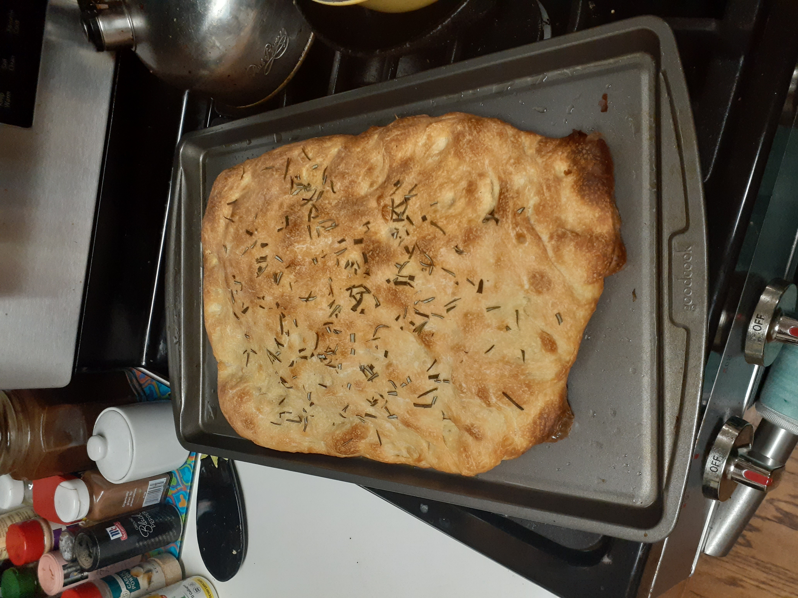

Focaccia Bread

Description
Ingredients
- 4 cups bread flour
- 2 tablespoons bread flour
- ¼ teaspoon active dry yeast
- 2 teaspoons kosher salt
- 4 teaspoons extra-virgin olive oil, or more as needed
- 1 ⅔ cups water, at room temperature
- 1 tablespoon minced fresh rosemary
- 1 tablespoon flaky sea salt
Steps
- Add bread flour and yeast to a large bowl and stir together
- Add kosher salt, oil, and water and stir
- Add extra oil or water if needed to create wet sticky dough
- Cover bowl and leave in room temperature for 12-14 hours
- Transfer to oiled pan for baking (preferably around 16 x 12 inches)
- Press dough into shape of pan
- Fold dough into thirds, once horizontally and then vertically
- Cover and let sit for 1 hour
- Press dough flat and repeat step 7 and step 8
- Press dough once more, drizzle with olive oil, cover and set for 2 hours
- Preheat oven to 425 degrees fahrenheit
- Add rosemary and flaky sea salt over the dough and bake for 30 minutes or until browned
- Let cool on wire rack and then eat
Home